Spatial data coverage
Pasqualina Vonlanthen & Jens Daniel Müller
11 November, 2021
Last updated: 2021-11-11
Checks: 7 0
Knit directory: bgc_argo_r_argodata/
This reproducible R Markdown analysis was created with workflowr (version 1.6.2). The Checks tab describes the reproducibility checks that were applied when the results were created. The Past versions tab lists the development history.
Great! Since the R Markdown file has been committed to the Git repository, you know the exact version of the code that produced these results.
Great job! The global environment was empty. Objects defined in the global environment can affect the analysis in your R Markdown file in unknown ways. For reproduciblity it’s best to always run the code in an empty environment.
The command set.seed(20211008) was run prior to running the code in the R Markdown file. Setting a seed ensures that any results that rely on randomness, e.g. subsampling or permutations, are reproducible.
Great job! Recording the operating system, R version, and package versions is critical for reproducibility.
Nice! There were no cached chunks for this analysis, so you can be confident that you successfully produced the results during this run.
Great job! Using relative paths to the files within your workflowr project makes it easier to run your code on other machines.
Great! You are using Git for version control. Tracking code development and connecting the code version to the results is critical for reproducibility.
The results in this page were generated with repository version fb668ef. See the Past versions tab to see a history of the changes made to the R Markdown and HTML files.
Note that you need to be careful to ensure that all relevant files for the analysis have been committed to Git prior to generating the results (you can use wflow_publish or wflow_git_commit). workflowr only checks the R Markdown file, but you know if there are other scripts or data files that it depends on. Below is the status of the Git repository when the results were generated:
Ignored files:
Ignored: .Rhistory
Ignored: .Rproj.user/
Ignored: output/
Untracked files:
Untracked: code/creating_dataframe.R
Untracked: code/creating_map.R
Untracked: code/pH_data_timeseries.R
Unstaged changes:
Modified: analysis/_site.yml
Modified: code/Workflowr_project_managment.R
Note that any generated files, e.g. HTML, png, CSS, etc., are not included in this status report because it is ok for generated content to have uncommitted changes.
These are the previous versions of the repository in which changes were made to the R Markdown (analysis/coverage_maps.Rmd) and HTML (docs/coverage_maps.html) files. If you’ve configured a remote Git repository (see ?wflow_git_remote), click on the hyperlinks in the table below to view the files as they were in that past version.
| File | Version | Author | Date | Message |
|---|---|---|---|---|
| html | 6276d6c | pasqualina-vonlanthendinenna | 2021-11-11 | Build site. |
| html | a103f60 | pasqualina-vonlanthendinenna | 2021-11-05 | Build site. |
| Rmd | 31576f9 | pasqualina-vonlanthendinenna | 2021-11-05 | changed QC flag maps |
| html | fbd5bac | pasqualina-vonlanthendinenna | 2021-11-04 | Build site. |
| html | 68977a1 | pasqualina-vonlanthendinenna | 2021-10-26 | Build site. |
| Rmd | 062b272 | pasqualina-vonlanthendinenna | 2021-10-26 | added ggsave |
| html | b57291a | pasqualina-vonlanthendinenna | 2021-10-26 | Build site. |
| html | bba33bf | pasqualina-vonlanthendinenna | 2021-10-26 | Build site. |
| Rmd | 4bc1859 | pasqualina-vonlanthendinenna | 2021-10-26 | run with full data |
| html | f7ef44f | jens-daniel-mueller | 2021-10-22 | Build site. |
| Rmd | ee2b3f3 | jens-daniel-mueller | 2021-10-22 | code revision |
| html | aa7280d | jens-daniel-mueller | 2021-10-22 | Build site. |
| Rmd | ca7ba6b | jens-daniel-mueller | 2021-10-22 | adding revised code |
| html | d84c904 | pasqualina-vonlanthendinenna | 2021-10-22 | Build site. |
| html | 8ecdb43 | pasqualina-vonlanthendinenna | 2021-10-22 | Build site. |
| html | c81f21c | pasqualina-vonlanthendinenna | 2021-10-21 | Build site. |
| html | 62d8519 | pasqualina-vonlanthendinenna | 2021-10-20 | Build site. |
| html | b8feac2 | pasqualina-vonlanthendinenna | 2021-10-20 | Build site. |
| html | 701fffa | pasqualina-vonlanthendinenna | 2021-10-20 | Build site. |
| Rmd | b88a839 | pasqualina-vonlanthendinenna | 2021-10-20 | adding revised code |
Task
Map the location of oxygen, pH, and nitrate observations recorded by BGC-Argo floats
Load data
Read the metadata file created in loading_data.html:
path_argo_preprocessed <- paste0(path_argo, "/preprocessed_bgc_data")
bgc_metadata <-
read_rds(file = paste0(path_argo_preprocessed, "/bgc_metadata.rds"))basinmask <-
read_csv(paste(path_emlr_utilities,
"basin_mask_WOA18.csv",
sep = ""),
col_types = cols("MLR_basins" = col_character()))
basinmask <- basinmask %>%
filter(MLR_basins == unique(basinmask$MLR_basins)[1]) %>%
select(lon, lat, basin_AIP)
map <-
read_rds(paste(path_emlr_utilities,
"map_landmask_WOA18.rds",
sep = ""))Spatial data coverage
Count profiles
bgc_metadata <- inner_join(
bgc_metadata,
basinmask
)Joining, by = c("lat", "lon")bgc_profile_counts_year <- bgc_metadata %>%
select(platform_number, cycle_number, date, lon, lat,
profile_doxy_qc, profile_ph_in_situ_total_qc, profile_nitrate_qc) %>%
pivot_longer(profile_doxy_qc:profile_nitrate_qc,
names_to = "parameter",
values_to = "profile_flag",
names_prefix = "profile_") %>%
mutate(year = year(date)) %>%
filter(!is.na(profile_flag),
profile_flag != "") %>%
count(lat, lon, year, parameter) # count the number of profiles per year in each lon/lat grid for each parameter
# count the number of profiles which have flags A, B, C, D, or E (count the number of profiles which have usable data)
bgc_profile_counts_usable <- bgc_metadata %>%
select(platform_number, cycle_number, date, lon, lat,
profile_doxy_qc, profile_ph_in_situ_total_qc, profile_nitrate_qc) %>%
pivot_longer(profile_doxy_qc:profile_nitrate_qc,
names_to = "parameter",
values_to = "profile_flag",
names_prefix = "profile_") %>%
mutate(year = year(date)) %>%
filter(!is.na(profile_flag),
profile_flag != "",
profile_flag != 'F') %>%
count(lat, lon, parameter, profile_flag) # count the number of profiles for flags A, B, C, D, and E (usable data) for each lon/lat grid
# count the number of profiles which have QC flag A (100% of levels contain good data)
bgc_profile_counts_A <- bgc_metadata %>%
select(platform_number, cycle_number, date, lon, lat,
profile_doxy_qc, profile_ph_in_situ_total_qc, profile_nitrate_qc) %>%
pivot_longer(profile_doxy_qc:profile_nitrate_qc,
names_to = "parameter",
values_to = "profile_flag",
names_prefix = "profile_") %>%
mutate(year = year(date)) %>%
filter(profile_flag == 'A') %>%
count(lat, lon, parameter)
# count the number of profiles which have a QC flag of F (100% of levels contain good data)
bgc_profile_counts_F <- bgc_metadata %>%
select(platform_number, cycle_number, date, lon, lat,
profile_doxy_qc, profile_ph_in_situ_total_qc, profile_nitrate_qc) %>%
pivot_longer(profile_doxy_qc:profile_nitrate_qc,
names_to = "parameter",
values_to = "profile_flag",
names_prefix = "profile_") %>%
mutate(year = year(date)) %>%
filter(profile_flag == 'F') %>%
count(lat, lon, parameter)By Year
Map of profile locations for each parameter, per year
map +
geom_tile(data = bgc_profile_counts_year,
aes(lon, lat, fill = n)) +
scale_fill_gradient(low = "blue", high = "red",
trans = "log10") +
facet_grid(year ~ parameter)
# bgc_profile_counts_year %>%
# ggplot() +
# geom_sf(data = ne_countries(returnclass = "sf"),
# fill = "gray90",
# color = NA) +
# geom_sf(data = ne_coastline(returnclass = "sf")) +
# geom_tile(aes(x = lon, y = lat, fill = n)) +
# scale_fill_gradient(low="blue", high="red",
# trans = "log10") +
# theme_bw() +
# facet_grid(year ~ parameter)# map the location of profiles for each parameter in each year
bgc_profile_counts_year %>%
group_split(parameter) %>%
map(
~ map +
geom_tile(data = .x, aes(
x = lon, y = lat, fill = n
)) +
scale_fill_gradient(low = "blue", high = "red",
trans = "log10") +
labs(
x = 'lon',
y = 'lat',
fill = 'number of\nprofiles',
title = paste('Parameter:', unique(.x$parameter))
) +
theme(
legend.position = "bottom",
axis.text = element_blank(),
axis.ticks = element_blank()
) +
facet_wrap(~year, ncol = 3)
)[[1]]Warning: Raster pixels are placed at uneven vertical intervals and will be
shifted. Consider using geom_tile() instead.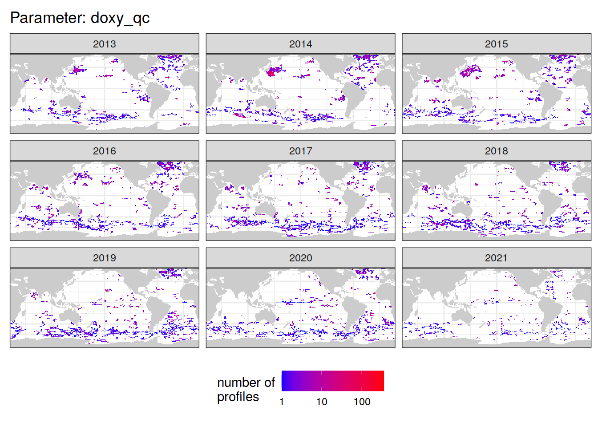
[[2]]Warning: Raster pixels are placed at uneven vertical intervals and will be
shifted. Consider using geom_tile() instead.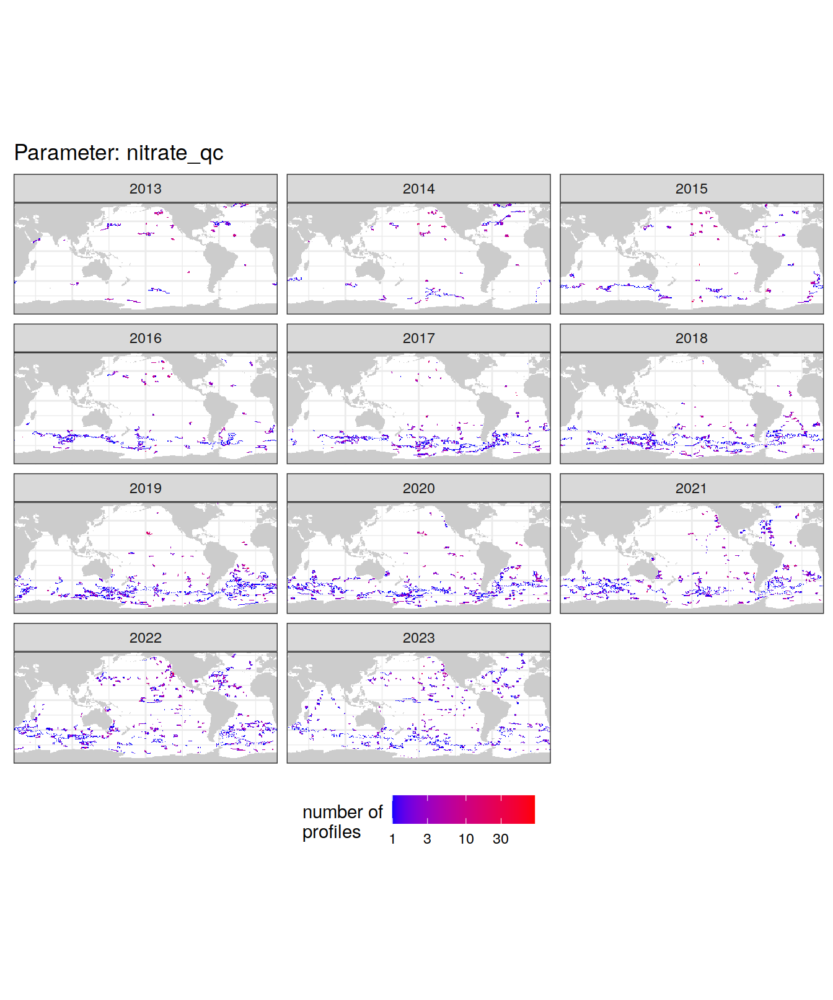
[[3]]Warning: Raster pixels are placed at uneven vertical intervals and will be
shifted. Consider using geom_tile() instead.
ggsave("output/figures/maps_per_year.png",
width = 7,
height = 4)Warning: Raster pixels are placed at uneven vertical intervals and will be
shifted. Consider using geom_tile() instead.# bgc_profile_counts_year %>%
# group_split(parameter) %>%
# map(
# ~ ggplot() +
# geom_sf(data = ne_countries(returnclass = "sf"),
# fill = "gray90",
# color = NA) +
# geom_sf(data = ne_coastline(returnclass = "sf")) +
# geom_tile(data = .x, aes(x = lon, y = lat, fill = n)) +
# scale_fill_gradient(low="blue", high="red",
# trans = "log10") +
# theme_bw() +
# labs(x = 'lon', y = 'lat', fill = 'number of profiles',
# title = paste('Parameter:', unique(.x$parameter)))+
# facet_grid(. ~ year)
# )By QC Flag
Map the profile locations for each profile QC flag of each parameter
bgc_profile_counts_flag %>%
ggplot() +
geom_sf(data = ne_countries(returnclass = "sf"),
fill = "gray90",
color = NA) +
geom_sf(data = ne_coastline(returnclass = "sf")) +
geom_tile(aes(x = lon, y = lat, fill = n)) +
scale_fill_gradient(low="blue", high="red",
trans = "log10") +
theme_bw() +
facet_grid(profile_flag ~ parameter)Flags A, B, C, D, and E
# map the location of profiles which contain usable data (profile QC flags A, B, C, D, and E)
# create a separate plot for each parameter
bgc_profile_counts_usable %>%
group_split(parameter) %>%
map(
~ map +
geom_tile(data = .x, aes(
x = lon, y = lat, fill = n
)) +
scale_fill_gradient(low = "blue", high = "red",
trans = "log10") +
labs(
x = 'lon',
y = 'lat',
fill = 'number of\nprofiles',
title = paste(unique(.x$parameter), 'Profile Flags A, B, C, D, E')
) +
theme(
legend.position = "bottom",
axis.text = element_blank(),
axis.ticks = element_blank()
) +
facet_wrap(~ parameter)
)[[1]]Warning: Raster pixels are placed at uneven vertical intervals and will be
shifted. Consider using geom_tile() instead.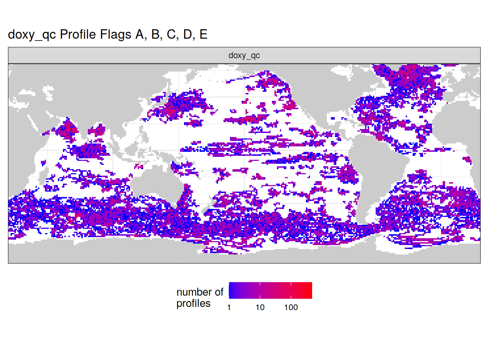
[[2]]Warning: Raster pixels are placed at uneven vertical intervals and will be
shifted. Consider using geom_tile() instead.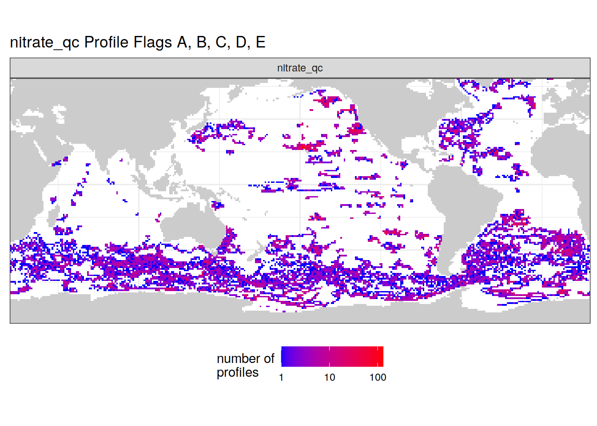
[[3]]Warning: Raster pixels are placed at uneven vertical intervals and will be
shifted. Consider using geom_tile() instead.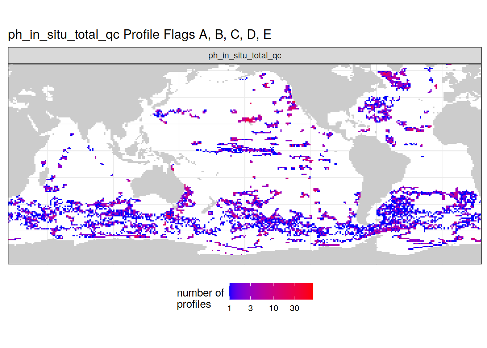
ggsave("output/figures/maps_usable_data.png",
width = 7,
height = 4)Warning: Raster pixels are placed at uneven vertical intervals and will be
shifted. Consider using geom_tile() instead.Flag A
# map the location of profiles with QC flag A for each parameter
# only the highest-quality data, with 100% of levels with good data
bgc_profile_counts_A %>%
group_split(parameter) %>%
map(
~ map +
geom_tile(data = .x, aes(
x = lon, y = lat, fill = n
)) +
scale_fill_gradient(low = "blue", high = "red",
trans = "log10") +
labs(
x = 'lon',
y = 'lat',
fill = 'number of\nprofiles',
title = paste(unique(.x$parameter), 'Profile Flag A')
) +
theme(
legend.position = "bottom",
axis.text = element_blank(),
axis.ticks = element_blank()
) +
facet_wrap(~ parameter)
)[[1]]Warning: Raster pixels are placed at uneven vertical intervals and will be
shifted. Consider using geom_tile() instead.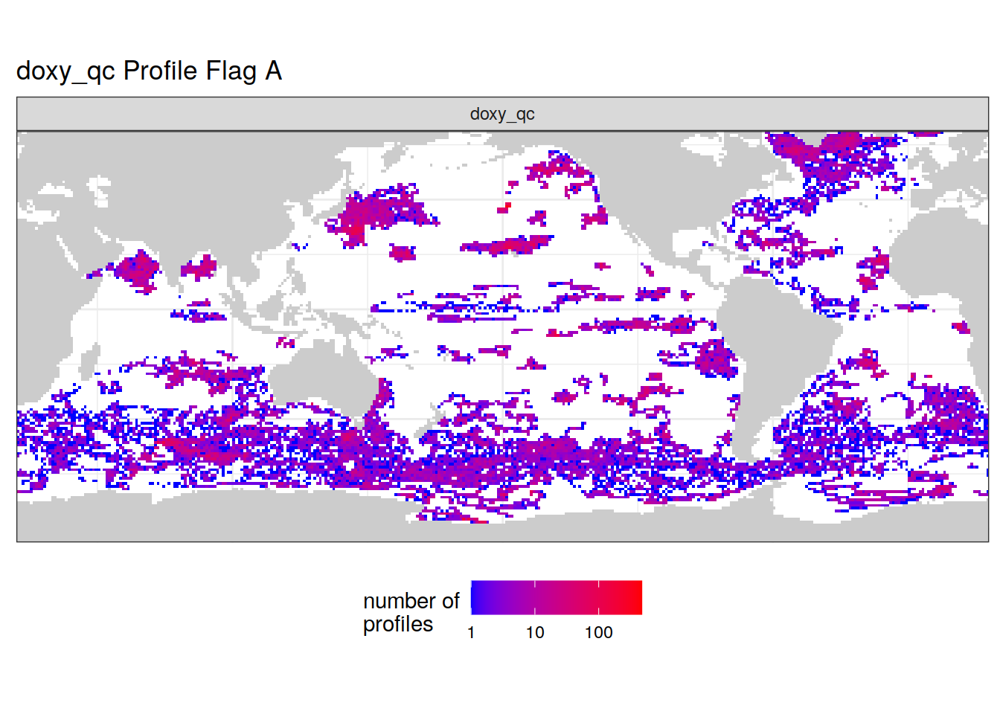
[[2]]Warning: Raster pixels are placed at uneven vertical intervals and will be
shifted. Consider using geom_tile() instead.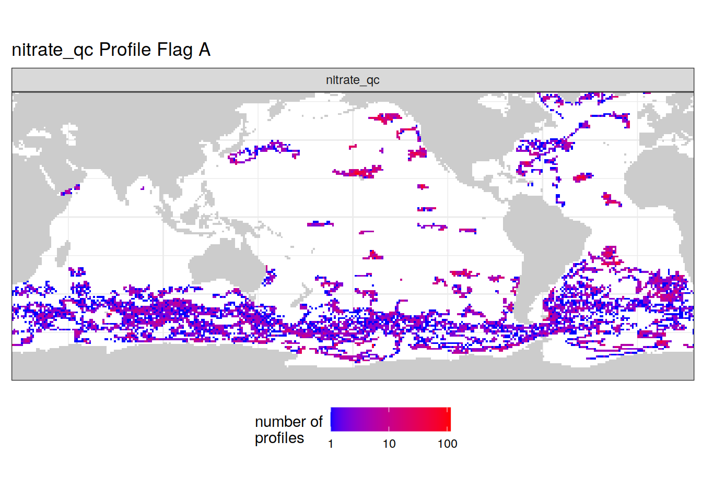
[[3]]Warning: Raster pixels are placed at uneven vertical intervals and will be
shifted. Consider using geom_tile() instead.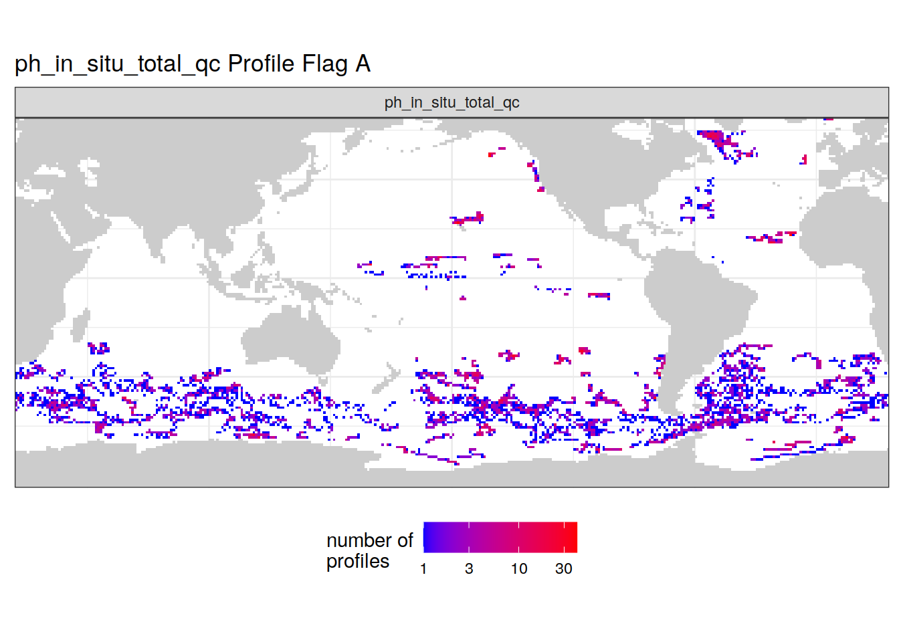
ggsave("output/figures/maps_A_flag.png",
width = 7,
height = 4)Warning: Raster pixels are placed at uneven vertical intervals and will be
shifted. Consider using geom_tile() instead.Flag F
# map the location of profiles with QC flag F (not usable data)
bgc_profile_counts_F %>%
group_split(parameter) %>%
map(
~ map +
geom_tile(data = .x, aes(
x = lon, y = lat, fill = n
)) +
scale_fill_gradient(low = "blue", high = "red",
trans = "log10") +
labs(
x = 'lon',
y = 'lat',
fill = 'number of\nprofiles',
title = paste(unique(.x$parameter), 'Profile Flag F')
) +
theme(
legend.position = "bottom",
axis.text = element_blank(),
axis.ticks = element_blank()
) +
facet_wrap(~ parameter)
)[[1]]Warning: Raster pixels are placed at uneven vertical intervals and will be
shifted. Consider using geom_tile() instead.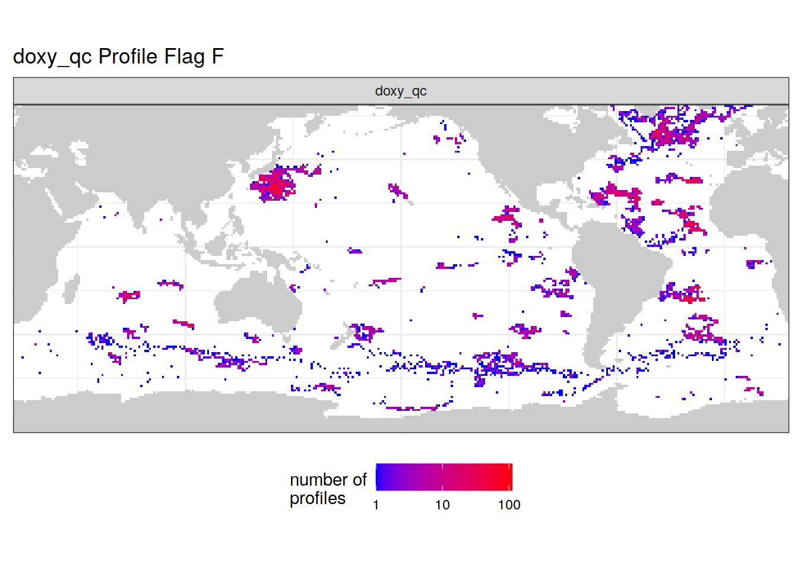
[[2]]Warning: Raster pixels are placed at uneven vertical intervals and will be
shifted. Consider using geom_tile() instead.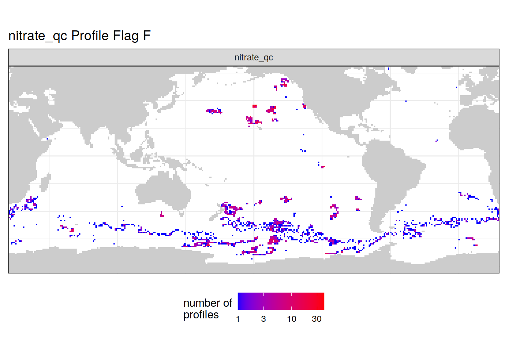
[[3]]Warning: Raster pixels are placed at uneven vertical intervals and will be
shifted. Consider using geom_tile() instead.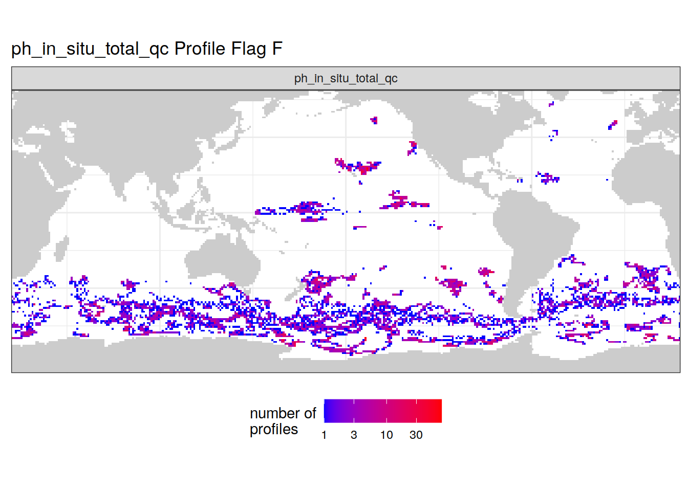
ggsave("output/figures/maps_flag_F.png",
width = 7,
height = 4)Warning: Raster pixels are placed at uneven vertical intervals and will be
shifted. Consider using geom_tile() instead.# create a separate plot for each QC flag (instead of multiple panels in one plot)
bgc_profile_counts_flag %>%
group_split(profile_flag) %>%
map(
~ map +
geom_tile(data = .x, aes(
x = lon, y = lat, fill = n
)) +
scale_fill_gradient(low = "blue", high = "red",
trans = "log10") +
labs(
x = 'lon',
y = 'lat',
fill = 'number of\nprofiles',
title = paste('Profile QC flag', unique(.x$profile_flag))
) +
theme(
legend.position = "bottom",
axis.text = element_blank(),
axis.ticks = element_blank()
) +
facet_grid(parameter ~ .)
)
ggsave("output/figures/maps_per_flag.png",
width = 7,
height = 4)ph_profile_counts_year <- bgc_metadata %>% # count the number of A-flag pH profiles
select(platform_number, cycle_number, date, lon, lat,
profile_ph_in_situ_total_qc) %>%
pivot_longer(profile_ph_in_situ_total_qc,
names_to = "parameter",
values_to = "profile_flag",
names_prefix = "profile_") %>%
mutate(year = year(date)) %>%
filter(profile_flag == "A") %>%
count(lat, lon, year, parameter)
# map the location of pH profiles with QC flag A each year
ph_profile_counts_year %>%
group_split(parameter) %>%
map(
~ map +
geom_tile(data = .x, aes(
x = lon, y = lat, fill = n
)) +
scale_fill_gradient(low = "blue", high = "red",
trans = "log10") +
labs(
x = 'lon',
y = 'lat',
fill = 'number of\nprofiles',
title = paste('Parameter:', unique(.x$parameter), 'flag A')
) +
theme(
legend.position = "bottom",
axis.text = element_blank(),
axis.ticks = element_blank()
) +
facet_wrap(~year, ncol = 3)
)
ggsave("output/figures/map_pH_flag_A_per_year.png",
width = 7,
height = 4)
sessionInfo()R version 4.0.3 (2020-10-10)
Platform: x86_64-pc-linux-gnu (64-bit)
Running under: openSUSE Leap 15.2
Matrix products: default
BLAS: /usr/local/R-4.0.3/lib64/R/lib/libRblas.so
LAPACK: /usr/local/R-4.0.3/lib64/R/lib/libRlapack.so
locale:
[1] LC_CTYPE=en_US.UTF-8 LC_NUMERIC=C
[3] LC_TIME=en_US.UTF-8 LC_COLLATE=en_US.UTF-8
[5] LC_MONETARY=en_US.UTF-8 LC_MESSAGES=en_US.UTF-8
[7] LC_PAPER=en_US.UTF-8 LC_NAME=C
[9] LC_ADDRESS=C LC_TELEPHONE=C
[11] LC_MEASUREMENT=en_US.UTF-8 LC_IDENTIFICATION=C
attached base packages:
[1] stats graphics grDevices utils datasets methods base
other attached packages:
[1] lubridate_1.7.9 argodata_0.0.0.9000 forcats_0.5.0
[4] stringr_1.4.0 dplyr_1.0.5 purrr_0.3.4
[7] readr_1.4.0 tidyr_1.1.3 tibble_3.1.3
[10] ggplot2_3.3.5 tidyverse_1.3.0 workflowr_1.6.2
loaded via a namespace (and not attached):
[1] Rcpp_1.0.7 assertthat_0.2.1 rprojroot_2.0.2 digest_0.6.27
[5] utf8_1.2.2 R6_2.5.1 cellranger_1.1.0 backports_1.1.10
[9] reprex_0.3.0 evaluate_0.14 highr_0.8 httr_1.4.2
[13] pillar_1.6.2 rlang_0.4.11 readxl_1.3.1 rstudioapi_0.13
[17] whisker_0.4 jquerylib_0.1.4 blob_1.2.1 rmarkdown_2.10
[21] labeling_0.4.2 munsell_0.5.0 broom_0.7.9 compiler_4.0.3
[25] httpuv_1.6.2 modelr_0.1.8 xfun_0.25 pkgconfig_2.0.3
[29] htmltools_0.5.1.1 tidyselect_1.1.0 fansi_0.5.0 crayon_1.4.1
[33] dbplyr_1.4.4 withr_2.4.2 later_1.3.0 grid_4.0.3
[37] jsonlite_1.7.2 gtable_0.3.0 lifecycle_1.0.0 DBI_1.1.1
[41] git2r_0.27.1 magrittr_2.0.1 scales_1.1.1 cli_3.0.1
[45] stringi_1.5.3 farver_2.1.0 fs_1.5.0 promises_1.2.0.1
[49] xml2_1.3.2 bslib_0.2.5.1 ellipsis_0.3.2 generics_0.1.0
[53] vctrs_0.3.8 tools_4.0.3 glue_1.4.2 RNetCDF_2.4-2
[57] hms_0.5.3 yaml_2.2.1 colorspace_2.0-2 rvest_0.3.6
[61] knitr_1.33 haven_2.3.1 sass_0.4.0